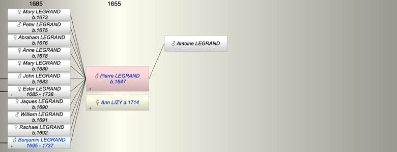

| [Index] |
| Pierre LEGRAND (1647 - ) |
|  |
| b. 1647 |
| +. Ann LIZY ( - 1714) |
| Parents: |
| Antoine LEGRAND |
| Children (11): |
| Mary LEGRAND (1673 - ) |
| Peter (Pierre) LEGRAND (1675 - ) |
| Abraham LEGRAND (1676 - ) |
| Anne LEGRAND (1678 - ) |
| Mary LEGRAND (1680 - ) |
| John (Jean) LEGRAND (1683 - ) |
| Ester LEGRAND (1685 - 1738) |
| Jaques LEGRAND (1690 - ) |
| William (Guillaume) LEGRAND (1691 - ) |
| Rachael LEGRAND (1692 - ) |
| Benjamin LEGRAND (1695 - 1737) |
| Grandchildren (9): |
| John LEGRAND, Mary LEGRAND, Esther FOURESTIER, Paul FOURESTIER, Peter FOURESTIER ( - 1719), Ann LEGRAND, William LEGRAND, George LEGRAND (1730 - ), Robert LEGRAND (1733 - ) |
| Events in Pierre LEGRAND (1647 - )'s life | |||||
| Date | Age | Event | Place | Notes | Src |
| 1647 | Pierre LEGRAND was born | Note 1 | |||
| 26 Nov 1673 | 26 | Birth of daughter Mary LEGRAND | Canterbury | Note 2 | |
| 1675 | 28 | Birth of son Peter (Pierre) LEGRAND | Canterbury | Note 3 | |
| 1676 | 29 | Birth of daughter Abraham LEGRAND | Canterbury | Note 4 | |
| 1678 | 31 | Birth of daughter Anne LEGRAND | Canterbury | Note 5 | |
| 1680 | 33 | Birth of daughter Mary LEGRAND | Canterbury | Note 6 | |
| 28 Sep 1683 | 36 | Birth of son John (Jean) LEGRAND | Canterbury | Note 7 | |
| 06 Dec 1685 | 38 | Birth of daughter Ester LEGRAND | Canterbury | Note 8 | |
| 1690 | 43 | Birth of daughter Jaques LEGRAND | Canterbury | Note 9 | |
| 1691 | 44 | Birth of son William (Guillaume) LEGRAND | Canterbury | Note 10 | |
| 1692 | 45 | Birth of daughter Rachael LEGRAND | Canterbury | Note 11 | |
| 1695 | 48 | Birth of son Benjamin LEGRAND | Canterbury | Note 12 | |
| 1714 | 67 | Death of wife Ann LIZY | Canterbury | Note 13 | |
| Oct 1737 | 90 | Death of son Benjamin LEGRAND (aged 42) | |||
| 21 Feb 1738 | 91 | Death of daughter Ester LEGRAND (aged 52) | Canterbury | Note 14 | |
| Personal Notes: |
|
Pierre Le Grand and Anne Lizy had:
1 Marie 2 Pierre, aged 19 on 16th December 1666; he married Anne Harrison of St Alphage, Canterbury. They had 7 children. 3 Abraham, aged 15 on 16th December 1666. 4 Annie, married Samuel Doubert. They had no issue. 5 Marie 6 Jean, aged 10 on 16th December 1666. He married Marie Six about 1717. They had 3 daughters and 2 sons, but no grandchildren. 7 Esther, bapt 17th December 1685, died 1738. She married Paul Fourestier. 8 Jaques 9 William 10 Rachel 11 Benjamin, bapt 29th December 1695, died October 1737. He married Anne Wren, daughter of George Wren, minor Canon of Canterbury. She died 6th September 1775, aged 64. Pierre was buried in St Peter's church in Canterbury. |
| Created on a Mac™ using iFamily for Mac™ on 8 Oct 2023 |